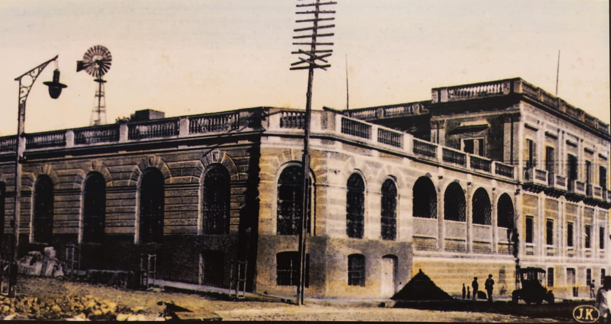

Aspectos Históricos
El señor Luiggi Patri, fue un acaudalado inmigrante de origen italiano, oriundo de Génova, quien, siendo joven llegó a Sudamérica y se dedicó al comercio. Llegó al Paraguay en la primera década del 1900.
Se había establecido anteriormente en Corrientes (Argentina), donde se convirtió en proveedor del Ejército Imperial del Brasil, por lo que llegó a amasar una gran fortuna, dicha actividad desempeñó hasta la conclusión de la Guerra contra la Triple Alianza (1864-1870).
Al finalizar la contienda llegó al Paraguay, junto con su socio comercial, Jorge Casaccia, y ambos continuaron el negocio como proveedores. Patri llegó a convertirse en un importante hacendado, aportando capital para el ferrocarril e incluso llegó a ser dueño del servicio ferroviario, además de fundador del Banco de Comercio, director del Banco Nacional del Paraguay y creador de una importante empresa yerbatera.
Con esfuerzo y suerte, amasó una gran fortuna y adquirió una propiedad equivalente a una manzana (1 Ha.) mandó a construir un palacete para su vivienda familiar. Fue, además, un gran latifundista y ha sido considerado el hombre de mayor riqueza en el Paraguay de la post guerra Luiggi Patri fue uno de los fundadores y presidente honorario de la "Societá italiana di Mutuo Soccorso" Asociación italiana de beneficencia fundada en el año 1871.
La corriente migratoria se inició a mediados del siglo XIX y se prolongó hasta la década de 1930; siendo el contingente más numeroso el de los suecos, seguido por el de los daneses y en menor medida los noruegos, finlandeses, españoles, italianos, etc.
Con referencia al estudio del edificio: El constructor de origen sueco Karl Gustaff Rehnfeldt, quien, se encargó del proyecto y la construcción con A. Pettirossi. La construcción se llevó a cabo de acuerdo a la corriente estilística imperante en esa época: Italianizante o Neoclásica, con claustro o patio interno central, estilo de las mansiones europeas de la época, con frente entre tres (3) calles.
La obra está organizada en dos (2) plantas o niveles, (sobre calle Alberdi) un gran patio que lo separa del sector posterior que tiene tres (3) plantas o niveles, se observa que todos los niveles están interconectados por una importante escalera y en planta baja por la amplia galería.
Para realizar los trabajos de construcción edilicia, se emplearon materiales propios de nuestro país: Piedras para cimientos, ladrillos cerámicos y revocados, entre otros, que fueron reforzados con estructuras metálicas (bovedillas) para la planta superior (segundo Piso).
Al fallecer su propietario, el señor Patri (año1904), la propiedad pasó a manos de sus herederos, y durante algún tiempo funcionó allí el "Instituto Paraguayo", entidad privada de fines culturales, fundada en el año 1895. En el año 1912, el Gobierno Nacional adquirió la propiedad de la familia Patri para la residencia del entonces presidente de la República Don Liberato Marcial Rojas Cabral, pero dicho uso no llegó a concretarse.
En el año 1913, el edificio fue entregado para ser sede de la Dirección de Correos y telégrafos. Hoy día se denomina Dirección Nacional de Correos (DINACOPA). En el año 2018, el Ministerio de Obras Públicas y Comunicaciones (MOPC) a través de la Dirección de Obras Públicas (DOP) llamó a licitación Pública Nacional para la realización de trabajos de restauración del edificio.
La empresa ganadora para la restauración edilicia ha cumplido en la presentación del Protocolo de Intervención de la Dirección General de Patrimonio Cultural de la Secretaría Nacional de Cultura (SNC,) el cual se constituye en uno de los importantes requisitos para la realización de intervenciones en edificios patrimoniales.
Descripción Formal: Desde el punto de vista de la tecnología aplicada, se observa el patrón edilicio Neoclásico que marca la arquitectura que se da con mayor auge en la ciudad de Asunción y ciudades importantes del interior del país. Surge la arquitectura de fachada sin dejar de lado la arquitectura colonial que se observan en la galería de la planta baja.
Se observa la lectura tripartita de: Base, Cuerpo y Coronamiento o remate. Las líneas compositivas respetan la armonía y el equilibrio formando los recursos estilísticos del edificio.
El antiguo edificio se organiza alrededor de un patio central, con una importante escalera exterior en "L" que conduce a la planta alta. Tipología Planta arquitectónica en doble U con patio central.
Descripción: El edificio se halla implantado en un amplio terreno en esquina, levemente sobre elevado con respecto a la calle Alberdi ocupando casi gran parte de la manzana. Está construido sobre límite municipal o vereda, en su interior se encuentra una amplia galería con arcos de medio punto. Esta galería comunica los espacios interiores con el exterior o patio El edificio refleja el modo de vida de una determinada clase social. Las habitaciones (hoy oficinas) se hallan dispuestas en forma lineal, una al lado de otra, integrada al patio central a través de la galería perimetral. Los ambientes o habitaciones son espaciosos y de gran altura.
La fachada principal, está organizado en base a: a) Zócalo con tratamiento de revoque tipo salpicado, b) Cuerpo, con tratamiento de revoque tipo almohadillado, molduras, pilastras, ornamentaciones varias, y 3) Coronamiento está compuesto por cornisas decoradas y antepechos con balaustres estilo italianizante.
En la planta alta, lleva balcones en voladizo, con soportes de ménsulas decoradas que sostienen la bovedilla y balaustres de mampostería. El auge de los balcones, corresponde a la época post guerra de 1870, cuando surgieron los palacetes urbanos que implicaban las construcciones de dos (2) niveles. En el tercer nivel o terraza también se observa un área de espacios techados con tejas y tejuelas sobre maderamen (oficinas) y terminación de baranda con balaustres.
Para su construcción se utilizaron materiales propios de nuestro país como ser: cimientos de piedra bruta extraídas de canteras ubicadas en el interior del país como Emboscada o Altos, ladrillos cerámicos para la mampostería (de diferentes espesores) y revocadas, que conforman la estructura edilicia; bovedillas catalanas que sirven de techo de la planta baja.
El techo o cubierta está conformado por bovedilla catalana y en el tercer nivel, se observa un agregado (nueva construcción-oficina) que tiene techo de tejas y tejuelas sobre tiranterías de madera (vigas, tirantes, alfajías). Los pisos están conformados por granito en acceso principal y escaleras, y en menor proporción mosaicos calcáreos de diversos diseños, el patio cuenta con pisos de ladrillos cerámicos y en ciertas áreas piedras, además, un gran cantero de plantas en el centro del mismo. etc.
Las aberturas (puertas y ventanas) de la planta baja y de la planta alta, son de madera tipo tablero y labrada, las rejas, son de hierro forjado diseñado artísticamente. En la gran puerta de hierro o puerta cancel se observa que predomina líneas curvas y motivos de filigrana, que en la parte superior lleva las iniciales del propietario, coronando el acceso principal.
En el patio interno cuenta con una importante escalera en "L" con balaustrada de mampostería, la misma conduce a la planta alta del edificio y la terraza que lleva terminaciones de balaustres de mampostería.
Grado de valoración: El Grado de valoración consignada por la Oficina Centro Histórico de la Municipalidad de Asunción. Forma parte del Patrimonio Nacional Se halla protegido por Ley 5621/16 "De Protección del Patrimonio Cultural", la Resolución Nº23/2006, la Resolución Nº: 26/2005 de la Dirección General de Bienes Culturales/VMC/MEC que protege a varios edificios de la época de los gobiernos de Don Carlos Antonio López y Francisco Solano López.
La Municipalidad de Asunción lo ha inventariado y catalogado a través de las Ordenanza HJM Nº 28/96 y 35/96. Desde el año 2013, dicho edificio es propiedad de la Dirección de Correos del Paraguay. (DINACOPA) Corresponde a edificios representativos de una época.
Observaciones: La DINACOPA (Dirección Nacional de Correos del Paraguay) fue creado por Ley Nº 4016/2010 con personería Jurídica de Derecho Público con carácter autárquico y patrimonio propio y depende de la Presidencia de la República. Reemplazó a la Dirección de Correos que dependía del Ministerio de Obras Públicas y Comunicaciones (Informe de Gestión año 2016).
Posee un Museo postal del Correo Paraguayo (año 1943) Cuenta con un excelente acervo de Bienes muebles, que se encuentra ubicado en un salón dentro del mismo edificio (calle Alberdi Nº 130).
El edificio, junto a otras edificaciones y plazas corresponden a uno de los sitios de valor histórico patrimonial y cívico de Asunción y todo el país. Actualmente, se espera que el proceso de la intervención edilicia, su restauración y puesta en valor continúe, pues, se viene realizando en forma lenta por el Ministerio de Obras Públicas y Comunicaciones a través de la Dirección de Obras Públicas en colaboración con el Ministerio de Urbanismo, Vivienda y Hábitat
Bibliografía
Gutiérrez Ramón Arq. Evolución Urbanística y Arquitectónica del Paraguay-1537-1911. Ediciones Comuneros- Año 1983-Asunción -Paraguay. páginas 66-67.
www.correoparaguayo.gov.py
www.mopc.gov.py
Plan de revitalización del Centro Histórico de Asunción-Memoria General-Tomo I / Volumen I -Municipalidad de Asunción-año 1991.
Artículo periodístico "El Ateneo Paraguayo -Luis Verón-abc revista (29/VII/1993).